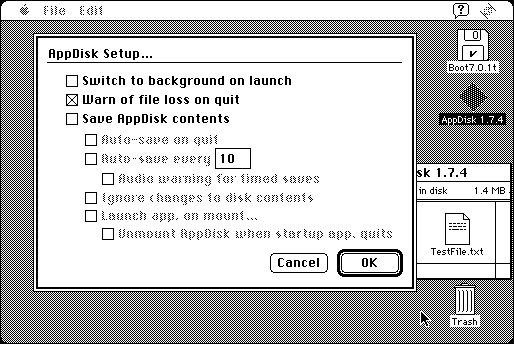

Download
AppDisk174.zip (37K) AppDisk 1.7.4 repackaged into a zipped hfs disk image and checksum file. The disk image can be mounted with Mini vMac.
AppDisk174.sit (37K) AppDisk 1.7.4 in the original format.
copyright: Maverick Software
mod date: Apr 10, 2004
license: shareware
last known url
(gone)
A ramdisk program, which “lets you use some extra RAM memory as a really fast hard disk.” This isn't so useful within Mini vMac, since a Mac Plus doesn't have much RAM, and you can instead put a disk image on a ramdisk of the host machine, and mount that in Mini vMac. But it does work, and perhaps could be used to try out things that will later be done on a real machine. “Written by Glenda Adams.” For System “7.0 and up”.

If you find these downloads useful, please consider helping the Gryphel Project, which hosts them.
Here are the md5 checksums for the downloads, signed with Gryphel Key 5:
--------- GRY SIGNED TEXT --------- 00b65c270460b2202f2448a28b102924 AppDisk174.zip 56a9d9f113f1a82f4e31c1c45859ad69 AppDisk174.sit ------- BEGIN GRY SIGNATURE ------- Gry/4Xa8CFcUzxdN/P9NvF9gjTkZMSJgjbeJZMV+16gANifDi7el5oy9AtZBrYzR Pyi5PUIa9DBnCXg8TmEQVoCKKHU+4lLWAklNHZhSrnfKmtgP0EfpyKYZQRCNjpFY jus6LESZ/r1RycIc/ZnBBAY/N6MtwIPXtI3ndScbfAvDGEqyWVW5YSqH/lDGw3Tk -------- END GRY SIGNATURE --------